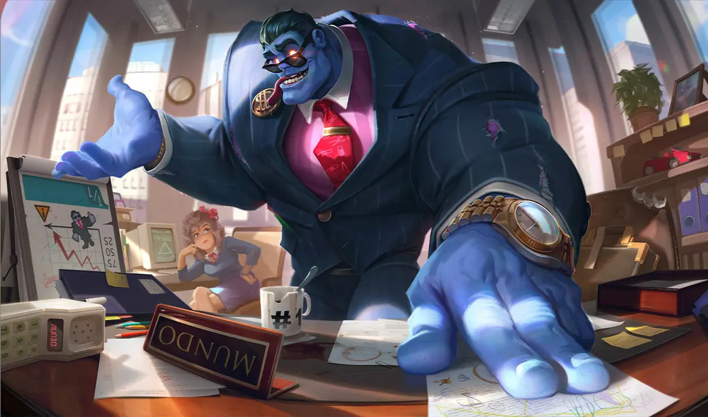

🆠E-Sport
Rox Tigers vs SKT T1 - Le Match Légendaire
📅 19 septembre 2025 • Par Eloan DELBROEUVE
L'un des plus grands matches de l'histoire de League of Legends. Le 22 octobre 2016,
cinq outsiders affrontaient la légende SKT T1 en demi-finale des Worlds.
Rox Tigers vs SKT T1, demi-finale des Worlds 2016
Cinq prodiges contre la légende de l'e-sport mondiale, contre FAKER - celui dont le nom suffit à faire plier les plus grandes équipes. Entouré de ses 4 équipiers, c'est mission impossible. SKT T1 ne perd jamais un match, encore moins un de cette importance.
Et pourtant, ces cinq inconnus de la communauté mondiale ont fait plier ce géant en demi-finales, pour ensuite remporter le trophée et disparaître comme ils sont arrivés.
🎥 Revivre les moments forts
🔄 Mise à jour
Patch 25.18 - Dernières nouveautés
Découvrez les dernières modifications et améliorations apportées au jeu.
📋 Consulter les notes du patch
🧪 Guide Champion
Dr. Mundo - Le Docteur de Zaun
📅 26 septembre 2025 • Par Eloan DELBROEUVE
Analyse complète de Dr. Mundo, champion tank-bruiser de League of Legends.

Dr. Mundo, the Madman of Zaun
🔬 Profil du Champion
Dr. Mundo est un tank-bruiser redoutable qui excelle dans les combats prolongés grâce à sa capacité
de régénération et d'augmentation des pv max.
⚔️ Capacités Clés
🩸 Passif - Adrénaline
Régénère des PV en fonction des PV manquants et gagne de la résistance aux effets de contrôles de foule.
🔪 A - Couperet infecté
Lance un couperet qui inflige des dégâts en fonction des PV max de Dr. Mundo.
💉 Z - Brûlure cardiaque
S'inflige des dégâts pour gagner des dégâts d'attaque et réduire les temps de recharge de ses autres capacitées.
🛡️ E - Masochisme
Gagne des résistances et ses attaques infligent des dégâts bonus basés sur ses PV max. Repousse l'énemi si l'attaque le tue, infligeant également aux énemis touchés.
💊 R - Dose maximale
Régénère massivement ses PV, gagne de la vitesse de déplacement et des PV max en fonction des pv manquants.
🯠Stratégie de Jeu
Early Game : Farmez de manière sécurisée avec vos couperets et évitez les trades
prolongés avant votre premier objet.
Mid Game : Rejoignez votre équipe pour les objectifs. Votre régénération vous permet
de tanker la pluspart des dégâts adverses.
Late Game : Devenez un mur. Utilisez votre ultime pour devenir de plus en plus dificile à arreter
ğŸ› ï¸ Build Recommandé
Objets Core : Cotte épineuse, Plaque du mort, Visage spirituel
Runes : Poigne de l'immortel, Démolition, Plaque d'os, Surcroissance
💡 Tips de Pro
- Utilisez votre couperet pour last-hit à distance
- Activez Brûlure cardiaque avant les combats pour maximiser vos dégâts et réduire vos temps de recharges
- Votre ultime vous rend quasi-immortel, n'hésitez pas à l'utiliser offensivement
- Mundo excelle contre les équipes avec beaucoup de dégâts magiques
🔍 Plus d'infos sur Dr. Mundo